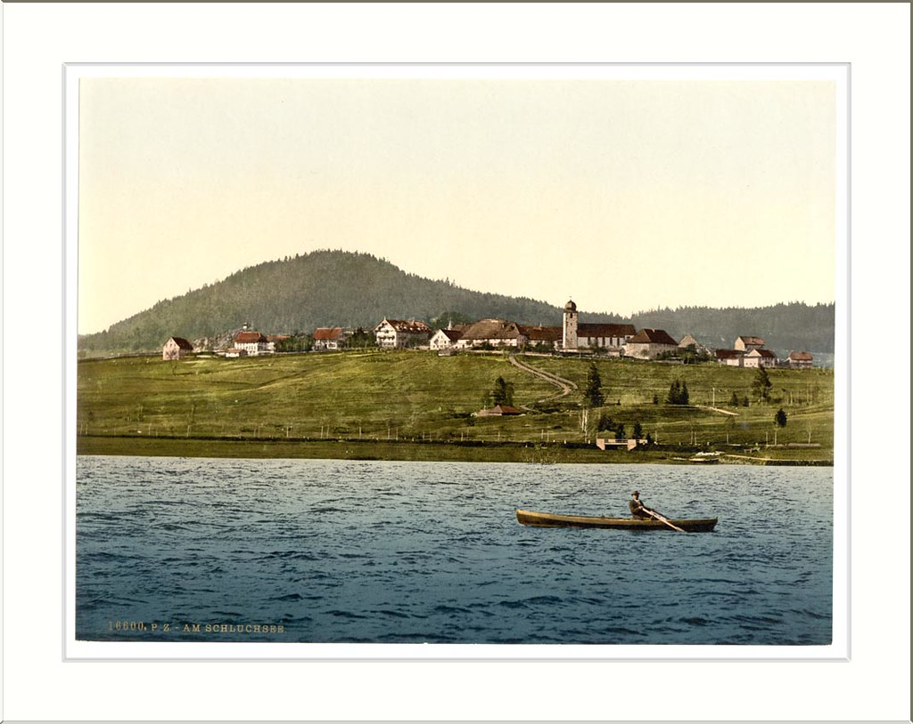

Darius lives in a small village surrounded by nature. They live in a warm but very wet environment. The Spartans are serious individuals when it comes to fighting, but they also like to sit around a fire and sing cultural songs. Their culture revolves around gods of sun, ocean, etc. they usually sing about their appreciation towards them. They sometimes have wilderness harass their village, but the Spartans manage to get rid of them if need be.
 "Schluchsee general view of village Black Forest Baden Germany" by snapshotsofthepast.com is licensed under CC BY-SA 2.0Click the links below to find out more about Darius